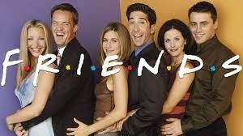
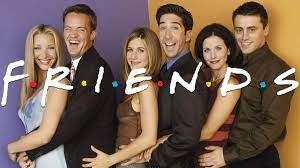

Bem vindos à "Wikiseries"
Todas as séries mais famosas reunidas em um só lugar!
Bem-vindo ao nosso site dedicado a explorar o vasto universo das séries de televisão mais aclamadas e cativantes de todos os tempos! Se você é um amante de séries e está sempre em busca de novas histórias envolventes para acompanhar, você veio ao lugar certo.
Prepare-se para mergulhar em um mundo repleto de drama, comédia, suspense e aventura, enquanto exploramos as séries que conquistaram corações e mentes ao redor do mundo. Desde os clássicos que moldaram a televisão até os lançamentos mais recentes que estão definindo o cenário atual, vamos oferecer uma cobertura completa e detalhada de tudo o que você precisa saber.
Descubra informações fascinantes sobre os bastidores da produção, mergulhe em análises aprofundadas de personagens e enredos, e fique por dentro das últimas notícias e curiosidades do mundo das séries de TV. Queremos proporcionar uma experiência envolvente e informativa para todos os fãs ávidos, desde os mais experientes até os recém-chegados ao mundo das séries.
Então, pegue sua pipoca, acomode-se confortavelmente no sofá e prepare-se para uma jornada emocionante através do mundo das séries de TV mais famosas. Estamos aqui para guiá-lo em uma viagem inesquecível através de histórias cativantes e emocionantes que continuarão a inspirar e entreter por muitos anos.
Obrigado por nos acompanhar nesta aventura! Vamos começar a explorar juntos? Bata clicar no nome da série no menu do lado esquerdo e Divirta-se!
 
